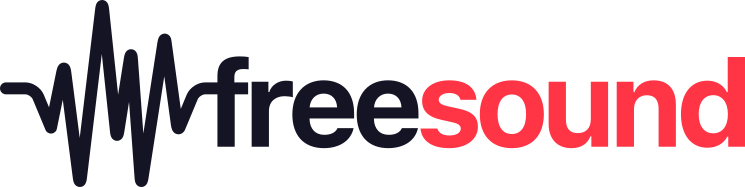

Welcome to the Freesound Loop Annotator, please help us annotating loops, it is really fun! 😀
If you want to contribute, login with your Freesound account, and follow the instructions to start annotating loops!
⚠️Please use Google Chrome for annotating!⚠️
Why we do this?
Existing research on audio loops lacks a standard dataset. We want to tackle this by creating a large-scale, open and distributable dataset with loops and high-quality annotations. Having better datasets will allow the research community to develop better technology to analyze, transform and browse music loops and in general, help the development of more creative audio tools (like Freesound!)
This work was presented in "The Freesound Loop Dataset and Annotation Tool".
The current version of the dataset can be downloaded in Zenodo.
The code for developing this tool is available in a GitHub repository.
If you use the dataset or the annotation tool in your own research, please cite:
@inproceedings{ramires2020, author = "Antonio Ramires and Frederic Font and Dmitry Bogdanov and Jordan B. L. Smith and Yi-Hsuan Yang and Joann Ching and Bo-Yu Chen and Yueh-Kao Wu and Hsu Wei-Han and Xavier Serra", title = "The Freesound Loop Dataset and Annotation Tool", booktitle = "Proc. of the 21st International Society for Music Information Retrieval (ISMIR)", year = "2020" }